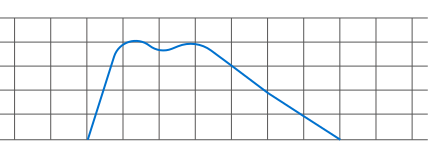

Inverter 1
SMA SC2600
Inverters / SMA Inverters
- Overview
- Controls
Inverter Major Underperformance
Inverter Performance Index indicates at least a 25% underperformance relative to other inverters on site.Evaluate active tracker and inverter faults. Check if a combiner / inverter module is off, or if something else such as a tracker or site curtailment is limiting production. Dispatch to site and open outage for capacity derate as necessary.
Power

SMA SC2600
9.16 MW
- DC Power
- 0.00
- MW
- Efficiency
- 0
- %
Alarms
1 Medium
- •Inverter Major Underperformance
- 8:49:34 AM
| Point | Type | Identifier | Data Quality | Raw Value | Engineering Value | Unit of Measure | Last Change (PST) | Last Reading (UTC) |
|---|---|---|---|---|---|---|---|---|
| Point Name Server / Dataset Name |
Modbus Holding Register |
440016 | •Online | 56 | 56 | % | 4/8/25 10:34:45 AM |
4/8/25 10:34:45 AM |
| Point Name Server / Dataset Name |
Modbus Holding Register |
440016 | •Online | 56 | 56 | 4/8/25 10:34:45 AM |
4/8/25 10:34:45 AM |
|
| Point Name Server / Dataset Name |
Modbus Input Register |
440016 | •Online | 56 | 56 | Amps | 4/8/25 10:34:45 AM |
4/8/25 10:34:45 AM |
| Calculation Name | Calculation Average |
440016 | •Online | 56 | 56 | Volts | 4/8/25 10:34:45 AM |
4/8/25 10:34:45 AM |
| Point Name Server / Dataset Name |
Modbus Analog Setpoint |
440016 | •Online | 56 | 56 | % | 4/8/25 10:34:45 AM |
4/8/25 10:34:45 AM |